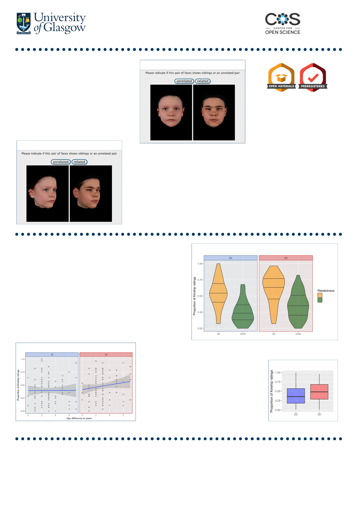

2D-3D
Kin recognition in human faces
Tommaso Querci, Iri s J. H o l zleit n e r, Lisa M . D eBru i n e
Department of Neuroscience and Psychology, 56-58 Hillhead st, University of Glasgow, UK
Introduction
• Kin recognition plays a significant role in
human social behaviour, affecting
trustworthiness, cooperation, and partner
choice
[1][2]
.
• Allocentric (third-party) kin recognition abilities
are supposed to serve humans and other
primates as a group-recognizing feature
[3]
.
• Maloney and Dal Martello
[4]
showed that
humans can discriminate between photographs
of biological siblings and unrelated couples.
Aims
• Since 3D visualization produces an experience
more similar to real life, which could result in a
more accurate per ception, the present study
compares third-party kinship judgments using
2D and 3D face stimuli.
• Also, following Maloney & Dal Mar tello
(2006), we test whether third-party kinship
judgments are affected by age and sex
differences between children.
Registered for
Preregistration
Challenge
Methods
• From an overall set of approximately
1500 images, we selected 50 sibling
pairs (both siblings under the age of
18) and 50 foil pairs matched for age,
sex, and ethnicity.
• Pairs of faces were presented on a
black background, masked to show
only the face, the ears, and a portion
of the neck. 3D faces were animated
to move side-to-side (-40 to +40
degree). (Fig. 1-2)
• 55 raters (32♀ 23♂) judged kinship
of 50 2D face pairs and a diff erent 50
3D face pairs (for each condition 25
related, 25 unrelated).
Results
• Main effect of relatedness: siblings were judged as related more
often than foil pairs. No significant effects of sex and age difference
within the couple. (Fig. 3)
• Main effect of stimulus type: pairs presented in 3D were judged as
related more often than 2D pairs, independent of the actual
relatedness. (Fig. 4)
• Effect of age difference on stimulus type: in the 3D condition, the
bigger the age difference within the couple, the more likely for that
couple to be judged as related. This effect does not appear in the 2D
condition. (Fig. 5)
Conclusions
• 3D visualization does not improve judgements’
accuracy, but it does increase the perceived
relatedness overall.
• Unexpectedly, and only in the 3D condition, third-
party raters are more likely to judge a pair as related
the bigger that pair’s age difference is.
• Further research should investigate whether the stim-
type effect is caused by a more attentive exploration
of 3D faces. Also, it is to explore the interaction
between 3D visualization and age difference.
References
[1] DeBruine, L. M. (2005). Trustworthy but not lust-worthy: Context-specific effects of facial
resemblance. Proceedings of the Royal Society of London B: Biological Sciences, 272(1566), 919-922.
[2] Krupp, D. B ., DeBruine, L. M., & Barclay, P. (2008). A cue of kinship promotes cooperation for the
public good. Evolution and Human Behavior, 29(1), 49-55.
[3] Cheney, D . L., & Seyfarth, R. M. (1986). The recognition of social alliances by vervet monkeys.
Animal Behaviour, 34(6), 1722-1731.
[4] Maloney, L. T., & Dal Martello, M. F. (2006). Kin recognition and the perceived facial similarity of
children. Journal of Vision, 6(10), 4-4.
3D condition example (rotating images)
Fig. 1
2D condition example (still images)
Fig. 2
Unrelated
Related
Main effects of relatedness and stimulus type
Fig. 3
Interaction between stimulus type and age difference
Fig. 5
Fig. 4
Stimulus type effect alone
Acknowledgements
The authors thank the members of the FaceLab at the
University of Glasgow, Erasmus+ program f or funding the
internship, Peter Kramer for supervision and suggestions.
Special thanks to Simone Garuglieri and Valeri a Taddei for
help and r evision.